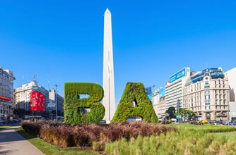
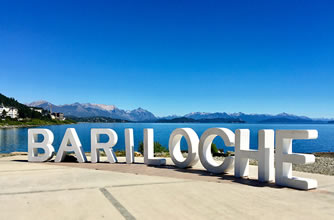
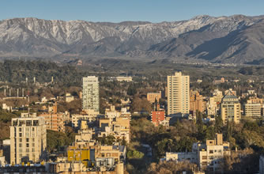
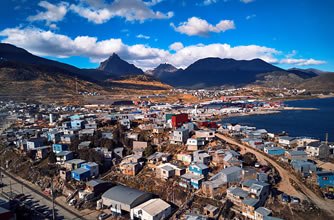

Excursiones
Buenos Aires
Tour panorámico. En este tour panorámico recorreremos Buenos Aires al completo disfrutando de los principales barrios, avenidas y monumentos de la ciudad. ¡La forma ideal de comenzar a conocer la capital del tango!
Bariloche
Puerto Blest y Cascada de los Cántaros. Navegá el brazo más importante del Lago Nahuel Huapi y descrubí selvas, cascadas, montañas y lagos de colores únicos. Preparate para vivir una experiencia inolvidable.
Mendoza
Tour de Bodegas Medio Día. Profundice en la mundialmente famosa cultura del vino de Mendoza en un tour de degustación de medio día ideal si tiene poco tiempo. Probará variedades cultivadas localmente.
Cataratas del Iguazú

Lado argentino. En este tour recorreremos el lado argentino, la zona más grande y espectacular de este lugar declarado Patrimonio de la Humanidad y nominado en 2011 como una de las Siete Maravillas Naturales del Mundo.
Ushuaia
Parque Nacional Tierra del Fuego. Recorre los principales lugares del Parque Nacional: Estación del Tren del Fin del Mundo, Ensenada Zarategui (unidad postal), Lago Acigami y Bahia Lapataia. Un poco más de texto para equilibrar.